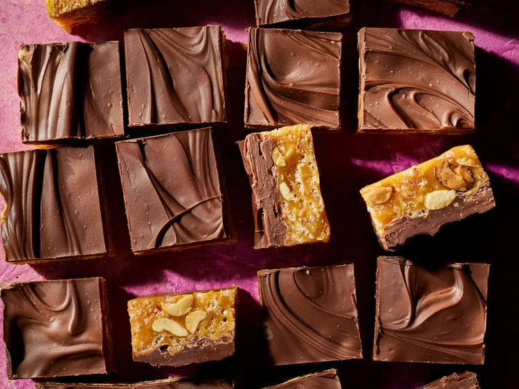

Home
Millionaire Bars

These millionaire bars are no-bake chocolate squares featuring crispy cereal, with a salty edge from roasted peanuts, but you could swap in another nut if you prefer.
Ingredients:
- 6 tablespoons heavy cream
- 1 tablespoon butter
- 1 pound vanilla caramels
- 2 1/2 cups crispy rice cereal
- 1 cup chopped salted roasted peanuts
- 1 (11.5 ounce) package milk chocolate chips
Directions:
- Line a 9x9-inch square baking pan with foil; grease well. Heat cream and butter in a medium saucepan over low heat until just steaming. Add caramels and continue cooking, stirring frequently, until melted and smooth. Stir in cereal and peanuts. Working quickly, spread mixture evenly in prepared pan.
- Microwave chocolate chips in a bowl on High, stirring every 30 seconds, until smooth, 1 to 2 minutes. Spread over caramel slab. Chill until set, about 2 hours; bars will keep, refrigerated, for up to 5 days.